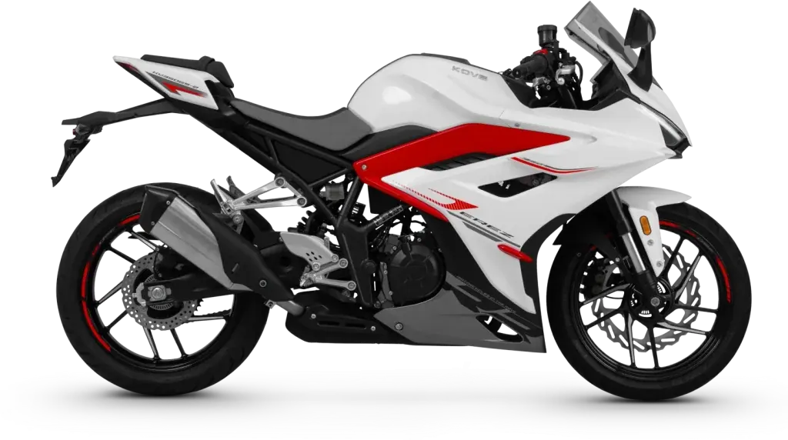
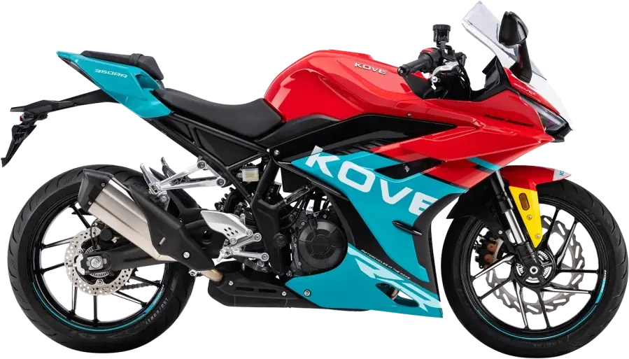
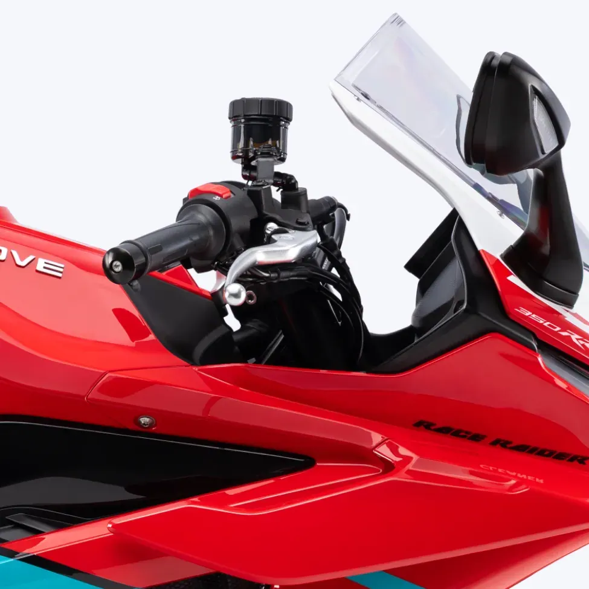
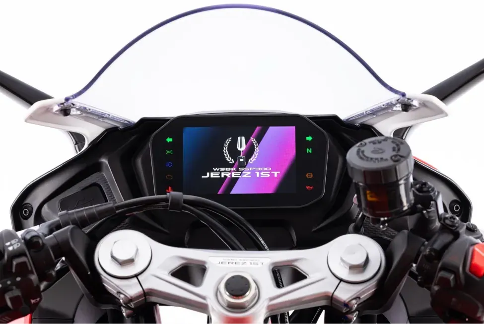
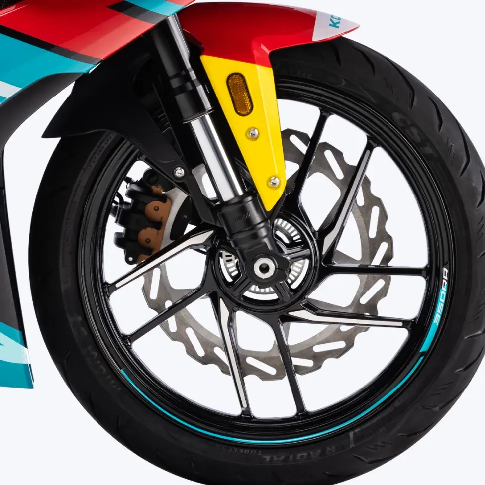

QJ Motor
SRK 600 (41kW | 35kW)
A2 600 cc · 41,2 kW · Deportivas
Propuesta de OpsPilot para Expomoto Córdoba, en revisión. No es la web oficial: expomotocordoba.es

Kove
Una moto con ADN Racing
Precio y financiación: te los damos al momento por teléfono (pendientes de publicar en la web).




La 350RR nace directamente de la pista, compartiendo la plataforma y chasis de la moto que conquistó el título del Campeonato del Mundo de Superbike SSP300 en 2025.
El launch control es la característica más exclusiva de su categoría. Este sistema electrónico gestiona la entrega de potencia del motor en el momento de la salida para maximizar la aceleración desde parado.
La 350RR lleva en el semimanillar la pantalla TFT de 7 pulgadas más completa de su categoría. Una instrumentación digital de gran formato con resolución de alta definición.
La única moto de su segmento que ofrece ABS TAISKO configurable y control de tracción (TCS), ambos desconectables de forma independiente, una característica reservada hasta ahora a motos de gama superior.
La 350RR monta un motor bicilíndrico en línea de 344 cc con distribución DOHC de 4 válvulas por cilindro y refrigeración líquida. Desarrolla 47 CV a 11.500 rpm y un par máximo de 32 Nm a 9.000 rpm.
La base estructural de la 350RR es un chasis integrado de doble viga con forma de diamante, la misma arquitectura que equipa la moto de competición del equipo KOVE Racing en el WSBK.